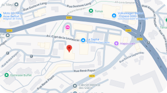

Le Sci-Fi Festival se déroule au Glacis de Belfort, un lieu emblématique qui a accueilli de nombreux événements culturels au fil des années. Ce vaste espace en plein air est idéal pour organiser des projections de films, des conférences et des ateliers en tout genre.
Belfort, située dans l'est de la France, est une ville facilement accessible et bien desservie. Le Glacis a une capacité d'accueil de plus de 10 000 personnes, offrant des zones dédiées pour les projections, les espaces de détente et les stands partenaires.
Adresse : 22 Av. Gast de la Laurencie, 90000 Belfort
Belfort est une ville bien desservie, que vous veniez en train, en voiture ou en bus. La gare de Belfort est située à seulement 15 minutes à pied du lieu du festival, tandis que des lignes de bus régulières facilitent l'accès à la zone.
Pour les visiteurs venant de plus loin, des options de covoiturage sont mises en place afin de limiter l'empreinte carbone de l'événement. Nous encourageons également les participants à utiliser les moyens de transport doux pour rejoindre le festival.
Belfort dispose d'une large gamme d'hôtels et d'hébergements adaptés à tous les budgets. Du camping à proximité du lieu du festival aux hôtels 4 étoiles situés en centre-ville, chaque visiteur pourra trouver une solution adaptée pour passer un séjour confortable.
Nous recommandons aux visiteurs de réserver leur hébergement le plus tôt possible, car la période du festival est très demandée. Une liste d'hébergements partenaires offrant des réductions pour les festivaliers est disponible sur notre site officiel.
Le Sci-fi'stival ne se limite pas aux projections de films. Durant tout le week-end, vous pourrez participer à des ateliers créatifs autour de la réalisation de courts-métrages, à des discussions et rencontres avec des réalisateurs de films de science-fiction, et assister à un concert de musiques cultes issues de films phares du genre. Ces activités sont conçues pour offrir une expérience interactive aux festivaliers, leur permettant de plonger au cœur de l’univers créatif de la science-fiction. Que vous soyez cinéphile ou simple curieux, ces moments d'échange vous permettront d’approfondir vos connaissances tout en vous amusant.